In my last project, I explored the Fairycore aesthetic and created an interactive game using Posenet to allow the user to interact with butterflies on screen.
The intention here was to have fun, catch butterflies, and give people a glimpse into the whimsical nature of Fairycore. However, the outcome felt like it was too similar to the interactive Snapchat filters.
I started working on this project with a new direction in mind, taking my old project's aesthetics and ideas from two dimensional and gamified ideas and transforming them into a meditative experience using virtual reality.
I chose virtual reality because it seemed like the perfect way to communicate my ideas across.
Because of VR's ability to take the user and immerse them into a new world. VR goes hand in hand with the Fairycore element of being taken from the current world into a new dimension. The first step I took in achieving this was to research the correlation between VR and relaxation.
(User-Centered Virtual Reality for Promoting Relaxation: An Innovative Approach. Pizzoli. et al. 2019) The study states that game developers can integrate virtual reality into stress relief approaches for two reasons.
The first one is that an individual can be taken into a "generic environment" and become exposed to a relaxing narrative, showcasing that the designed environment surrounding the user in VR plays a significant role in how the person will feel. The second reason is engagement.
The more engaging the environment is, the more the person will adapt and connect emotionally. Knowing this, I decided to create my project, considering two crucial things.
The first part explores the interaction and how things were supposed to move once someone acknowledges objects in a scene.
(Duff,2015) I was inspired by American psychologist Robert Duff's breathing gif but felt like it needed more dynamic elements to be Fairycore indeed, so I started looking at kaleidoscopes and took it upon myself to create similar imageries.
The process was slow at the start, but as I progressed, I began to develop more dynamic iterations, going from a singular butterfly rotating on one axis to a series of butterflies moving in unison to form randomized loops.
The second part was to create the scene. The environment I chose for the project allows the user to walk amongst pinkish-purple water and gaze upon the stars placed in the sky. After coding the interaction to the environment further, it resulted in a world suited to calm and relax the viewer.
The exchange happens when the viewer looks at the stars placed in the scene. Through raycasting, once someone looks at an object in the background, it transforms into a series of butterflies.

 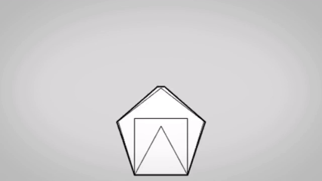
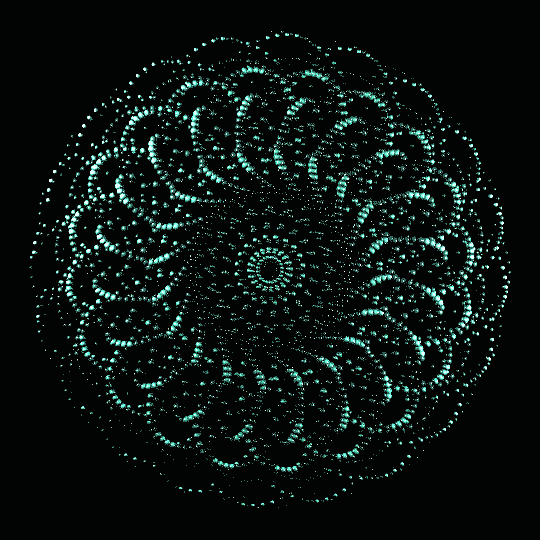
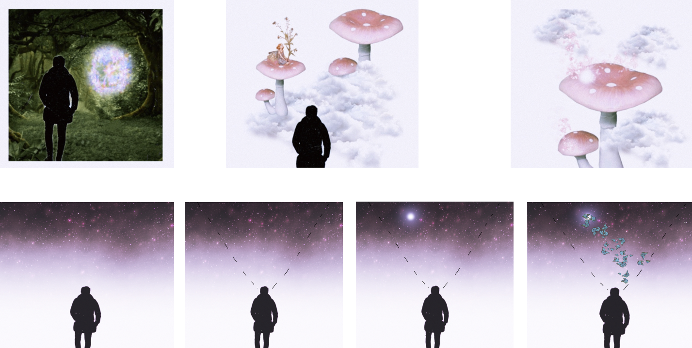
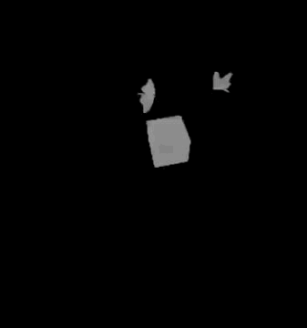
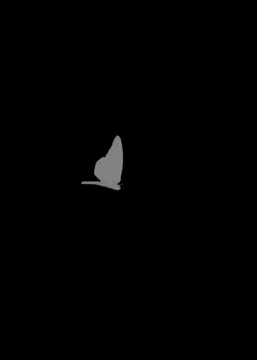
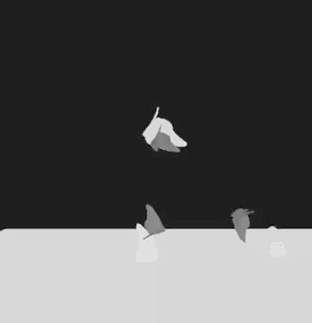
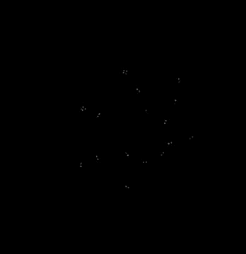
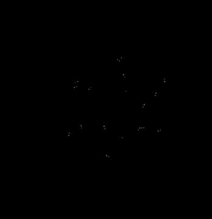
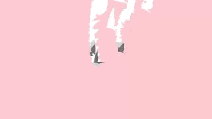
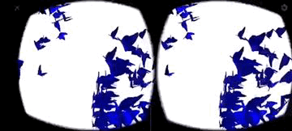
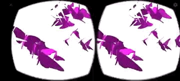
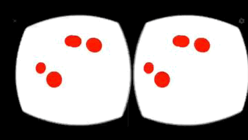
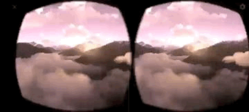
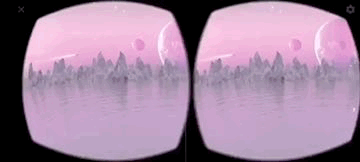
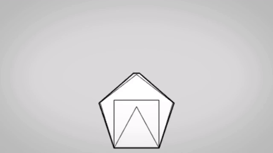
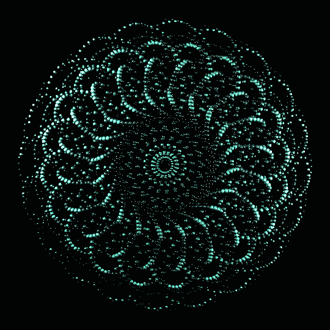
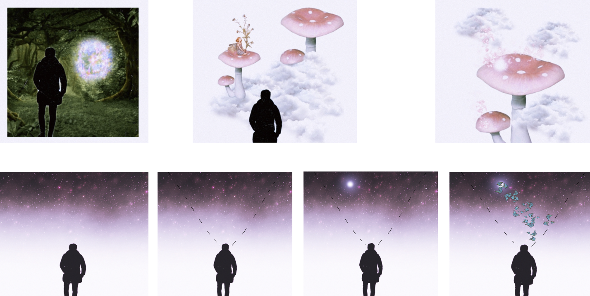
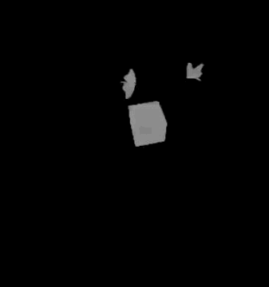
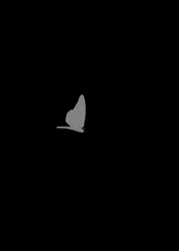
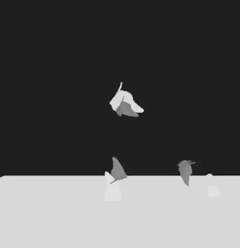
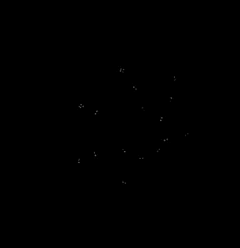
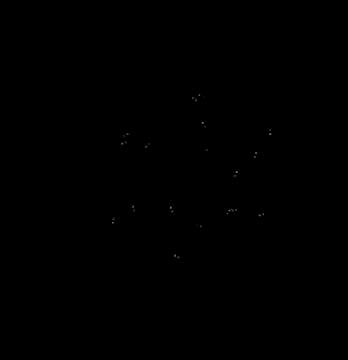
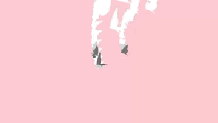
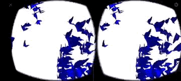
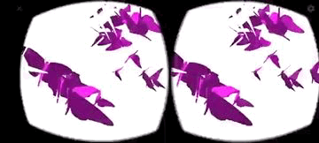
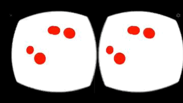
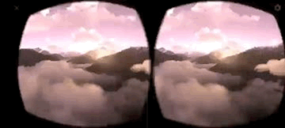
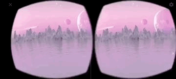
let video; let poseNet; let pose; let skeleton; let imgNet let imgButterfly let imgFrame let imgCloud let wrist let fairies = [] let numFairy = 70 let imgFlower //var song; function setup() { createCanvas(640, 480); video = createCapture(VIDEO); video.hide(); poseNet = ml5.poseNet(video,modelLoaded); poseNet.on('pose',gotPoses) song.play(); for (var i = 0; i < numFairy; i++ ){ let newFairy = createFairy(imgNet) fairies.push(newFairy) } } function createFairy(img){ let obj = {} obj.img = img obj.x = random(width) obj.y = random(height) obj.xoff = random() obj.yoff = random() obj.move = function(){ // console.log('move') this.xoff += 0.01 this.yoff += 0.01 this.x = noise(this.xoff)*width this.y = noise(this.yoff)*height } obj.display = function(){ push() translate(this.x, this.y) image(imgButterfly,0,0,40,40); pop() } obj.eat = function(v){ let d = dist(this.x, this.y, v.x, v.y) if (d < 200 ){ this.x = 0 this.y = 0 } } obj.update = function(v){ this.move() this.eat(v) this.display() } return obj } function gotPoses(poses){ //console.log(poses); if (poses.length>0){ pose = poses[0].pose; skeleton = poses[0].skeleton } } function modelLoaded(){ console.log('poseNet ready'); } function preload(){ song = loadSound("Nice Boys Temporex instrumental Karaoke No Vocals.mp3"); imgNet=loadImage('net.png') wrist = createVector(0, 0, 0); imgButterfly=loadImage('f3.PNG') imgFrame=loadImage('flowframe.png') imgCloud=loadImage('cloud1.png') imgFlower=loadImage('flower.png') } function draw() { image(video,0,0) image(imgFrame,-120,-280,800,800); image(imgCloud,300,250,600,300); image(imgCloud,-100,400,600,300); image(imgFlower,-70,-159,300,300) if (pose) { let eyeR = pose.rightEye; let eyeL= pose.leftEye; let d = dist(eyeR.x,eyeR.y,eyeL.x,eyeL.y); //image(pose.nose.x,pose.nose.y,d); wrist.lerp(pose.rightWrist.x,pose.rightWrist.y,0,0.1); fairies.forEach(fairy => fairy.update(wrist)) drawItem(imgNet,wrist,300,300) } } function drawItem(img,vec,w,h){ push() translate(vec.x-w/2,vec.y-h/2) fill('red') image(img,0,0,w,h); pop() } flutterheart